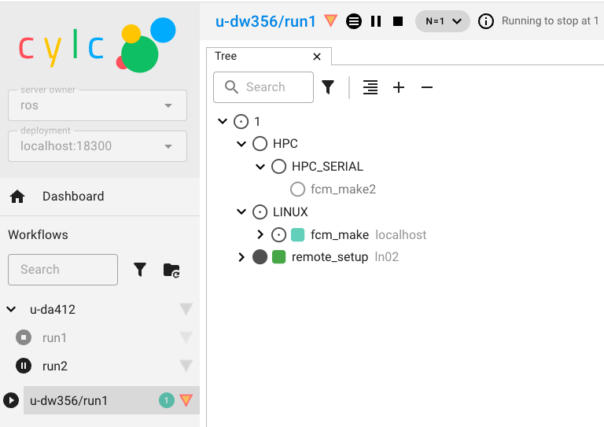

2. Getting Set Up (Leeds Training Course)
Warning
You MUST have PUMA2, ARCHER2 and MOSRS accounts setup before starting this section.
Warning
These instructions are for use on the in-person UM Training Course held in Leeds. If you are using them for self-study please contact NCAS-CMS for instructions.
2.1. Set up your ARCHER2 connection - Using your own laptop
If you are using your own laptop, you should already have setup so that you can access ARCHER2 from a teminal window, please proceed to the section Set up your ARCHER2 environment.
2.2. Set up your ARCHER2 connection - Using an NCAS laptop
To use the UM Introduction Tutorials you will first need to ensure you can connect from your local desktop to ARCHER2.
SSH key files
Before you try and connect to ARCHER2, you need to make sure that you have the ssh-keys available on your computer.
In these instructions, we’ve assumed the keys are called id_rsa_archer2 and id_rsa_archer2.pub. Replace with the name of your keys as appropriate.
Hopefully you remembered to bring your ARCHER2 ssh-key with you on a USB stick. Please talk to a course tutor if you have forgotten it.
Copy your ssh-key from the USB stick to the ~/.ssh directory.
Connecting via a Terminal (GNU/Linux & macOS)
Connecting via a terminal with an X11 connection (XQuartz is also required when using macOS)
Login to ARCHER2:
ssh -Y -i ~/.ssh/id_rsa_archer2 <archer2-username>@login.archer2.ac.uk
To simplify the login process, you can define a ~/.ssh/config file entry containing the necessary information. For example:
Host archer2
Hostname login.archer2.ac.uk
User <archer2_username>
IdentityFile ~/.ssh/id_rsa_archer2
ForwardX11 yes
ForwardX11Trusted yes
so that you can connect using just the command:
ssh archer2
2.3. Set up your ARCHER2 environment
Login to ARCHER2 from your local desktop, copy the following profile to your home directory.
archer2$ cp /work/y07/shared/umshared/um-training/rose-profile ~/.profile
Change the permissions on your /home and /work directories to enable the NCAS-CMS team to help with any queries:
chmod -R g+rX /home/n02/n02/<your-username>
chmod -R g+rX /work/n02/n02/<your-username>
2.4. Set up your PUMA2 connection
PUMA2 is accessed from the ARCHER2 login nodes, and you will use the same username and password.
From an ARCHER2 terminal type:
archer2$ ssh -Y puma2
and type your ARCHER2 password when prompted.
You should now be logged into PUMA2. To go back to the ARCHER2 login nodes, type exit.
Set up passwordless access to PUMA2
You can set up a passphrase-less ssh-key to allow you to connect to PUMA2 without typing a password or passphrase.
Note
We would never normally advise using an ssh-key without a passphrase, but in this case it is safe to do so since we are already authenticated within the ARCHER2 system.
From the ARCHER2 login nodes, type:
archer2$ ssh-keygen -t rsa -f ~/.ssh/id_rsa_puma2
At the prompt, press enter for an empty passphrase.
Copy the key over to PUMA2:
archer2$ ssh-copy-id -i ~/.ssh/id_rsa_puma2 puma2
Type in your ARCHER2 password when prompted.
Next, create a file called ~/.ssh/config (if it doesn’t already exist), and add the following lines:
Host puma2
IdentityFile ~/.ssh/id_rsa_puma2
ForwardX11 yes
Test it works by typing:
archer2$ ssh puma2
You should not be prompted for your password. Note that this should have set up X11 forwarding, so you no longer need the -Y option.
Warning
You should never use a passphrase-less key to access the ARCHER2 login nodes, as this is a serious security risk.
2.5. Set up your PUMA2 environment
Copy our standard .profile and .bashrc files:
puma2$ cd
puma2$ cp ~um1/um-training/puma2/.bash_profile .
puma2$ cp ~um1/um-training/puma2/.bashrc .
Logout of PUMA2 and back in again to pick up these changes.
You will get a warning about not being able to find ~/.ssh/ssh-setup. This can be ignored and will be resolved in the next step.
You should also be prompted for your Met Office Science Repository Service password, then username. Note that it asks for your password first.
Remember your MOSRS username is one word; usually firstnamelastname, all in lowercase.
If the password caching works, you should see:
Subversion password cached
Rosie password cached
This means you can now access the code and roses suites stored in the Met Office respositories.
Note
The cached password is configured to expire after 12 hours. Simply run the command mosrs-cache-password to re-cache it if this happens. Also if you know you won’t need access to the repositories during a login session then just press return when asked for your MOSRS password.
Finally, change the permission on your PUMA2 /home space:
chmod -R g+rX /home/n02/n02/<your-username>
2.6. Set up your ssh-agent
In order to submit jobs to ARCHER2 from PUMA2, you will need to set up an ssh-agent and use it to cache the passphrase to your ARCHER2 key.
i. Copy your ARCHER2 ssh-key pair to PUMA2
Your ARCHER2 key is the one that you use to ssh into the ARCHER2 login nodes. You need to copy both the public and private keys into your .ssh/ directory on PUMA2.
Open a new terminal from wherever you originally connected to ARCHER2 in Set up your ARCHER2 connection - Using your own laptop, and run the following command
scp ~/.ssh/id_rsa_archer2* <archer2-username>@login.archer2.ac.uk:/home/n02/n02-puma/<archer2-username>/.ssh
ii. Start up your ssh-agent
First copy the ssh-setup script to your .ssh/ directory.
puma2$ cp ~um1/um-training/setup/ssh-setup ~/.ssh
Next log out of PUMA2 and back in again to start up the ssh-agent process. You should see the following message
Initialising new SSH agent...
iii. Add your ARCHER2 key
Add your ARCHER2 key to the ssh-agent, by running
puma2$ ssh-add ~/.ssh/id_rsa_archer2
Enter your passphrase when prompted. If the passphrase has been cached successfully you should see a message like this:
Identity added: /home/n02/n02/<archer2-username>/.ssh/id_rsa_archer2
The ssh-agent will continue to run even when you log out of PUMA2. However, it may stop from time to time, for example if PUMA2 is rebooted. For instructions on what to do in this situation see Restarting your ssh agent in the Appendix.
iv. Configure access to the ARCHER2 login nodes
Create a file ~/.ssh/config (if it doesn’t already exist), and add the following lines:
# ARCHER2 login nodes
Host ln*
IdentityFile ~/.ssh/id_rsa_archer2
iv. Verify the setup is correct
To test this is all working correctly, run:
puma2$ rose host-select archer2
This should return one of the login nodes, e.g. ln01. If it returns a message like [WARN] ln03: (ssh failed) then something has gone wrong with the ssh setup.
2.7. Using the Cylc Web GUI
Cylc provides a terminal based user interface and a web browser based one. The course can be completed using either. If you wish to use the Cylc Web GUI some setup is required. Here we provide instructions for Linux, Mac & MobaXterm (Windows).
Linux/Mac
Edit the ~/.ssh/config file on your laptop so that the ARCHER2 and PUMA2 sections contain:
# PUMA2
Host puma2
User <username>
IdentityFile ~/.ssh/<your-archer-ssh-key>
ProxyJump archer2
# ARCHER2
Host archer2
Hostname login.archer2.ac.uk
User <username>
IdentityFile ~/.ssh/<your-archer-ssh-key>
ForwardX11 No
ControlMaster auto
ControlPath /tmp/ssh-socket-%r@%h-%p
ControlPersist yes
You should now be able to type ssh puma2 and land directly on PUMA2.
Setup an alias on your laptop by adding one for the following to your ~/.bashrc or equivlaent depending on whether you are using Linux or a Mac.
i. Linux
alias puma-ui='PORT=$(shuf -n 1 -i 10000-65000); ssh -t -L ${PORT}:localhost:${PORT} puma2 "bash -l -c \"export CYLC_VERSION=8; cylc gui --no-browser --Application.log_level=WARN --port-retries=0 --port=${PORT}\""'
ii. Mac
alias puma-ui='PORT=$(jot -r 1 10000 65000); ssh -t -L ${PORT}:localhost:${PORT} puma2 "bash -l -c \"export CYLC_VERSION=8; cylc gui --no-browser --Application.log_level=WARN --port-retries=0 --port=${PORT}\""'
MobaXterm (Windows)
Launch MobaXterm
Open a terminal (click on the “+” tab)
If needed create a
~/.sshdirectoryCopy your ARCHER2 key into
~/.sshon MobaXterm the local disk is available at /mnt/cEdit (or create) the file
~/.ssh/configwith the following contents:
# PUMA2
Host puma2
User <username>
IdentityFile ~/.ssh/<your-archer-ssh-key>
ProxyJump archer2
# ARCHER2
Host archer2
Hostname login.archer2.ac.uk
User <username>
IdentityFile ~/.ssh/<your-archer-ssh-key>
ForwardX11 No
ControlMaster auto
ControlPath /tmp/ssh-socket-%r@%h-%p
ControlPersist yes
Setup an alias by adding the following line to your ~/.bashrc:
alias puma-ui='PORT=$(shuf -n 1 -i 10000-65000); ssh -t -L ${PORT}:localhost:${PORT} puma2 "bash -l -c \"export CYLC_VERSION=8; cylc gui --no-browser --Application.log_level=WARN --port-retries=0 --port=${PORT}\""'
Start up the cylc web GUI
In a new terminal window type:
$ puma-ui
You see see a response similar to the following:
$ puma-ui
#################################################################################
------------------------------Welcome to PUMA2-----------------------------------
#################################################################################
[C 2026-01-22 08:25:30.367 ServerApp]
To access the server, open this file in a browser:
file:///home/n02/n02/ros/.cylc/uiserver/info_files/jpserver-1094362-open.html
Or copy and paste one of these URLs:
http://localhost:20522/cylc?token=700ab2be96800177d03df31b8140857cab02b9632af45a1d
http://127.0.0.1:20522/cylc?token=700ab2be96800177d03df31b8140857cab02b9632af45a1d
[W 2026-01-22 08:25:44.242 ServerApp] The websocket_ping_timeout (999999) cannot be longer than the websocket_ping_interval (290).
Setting websocket_ping_timeout=290
Copy and paste one of the http URLs listed into your web browser and you should then see your Cylc GUI load. If you have never used Cylc8 before the Workflows panel will be empty.
{kind=link}

You are now ready to try running a UM suite!